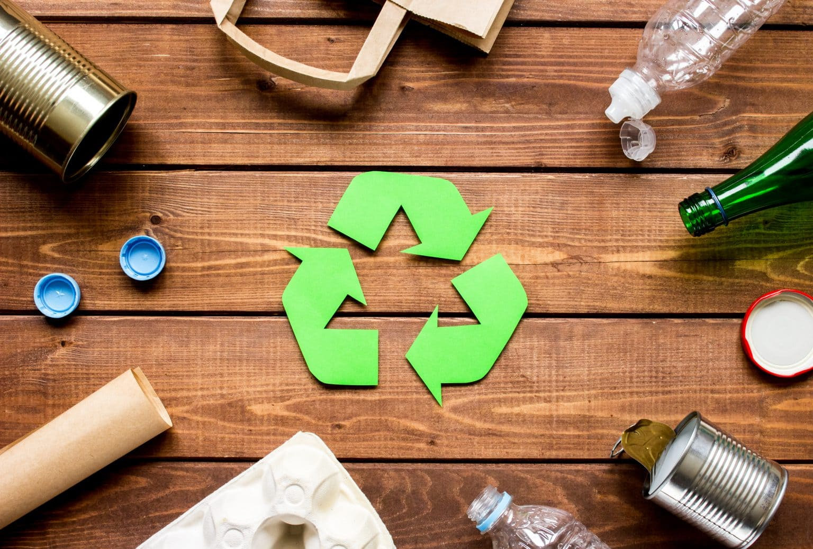

Recycle4people
Start today help the planet tomorrow
Can you imagine how much unsorted garbage is collected per day in a house, neighborhood, city or world?
The
numbers will excite the minds of even the most creative dreamer. It is not necessary to immediately rush
to
extremes, buy 11 buckets and fanatically read the composition of each package. Start with something
simple like
paper or plastic bottles. Once it becomes a habit, it becomes easier to separate the rest.
"I'm ready, what should I do?"
-
Deciding what type of raw material to start with. For example, from next week we will sort
plastic bottles
(except for opaque and oily ones).
-
We put a separate container in the apartment and do not forget to rinse and compress the bottle.
This will help
to avoid unpleasant odors and reduce the number of debris.
What can you collect right now?
-
Batteries
-
Lamps
-
Textiles and clothing